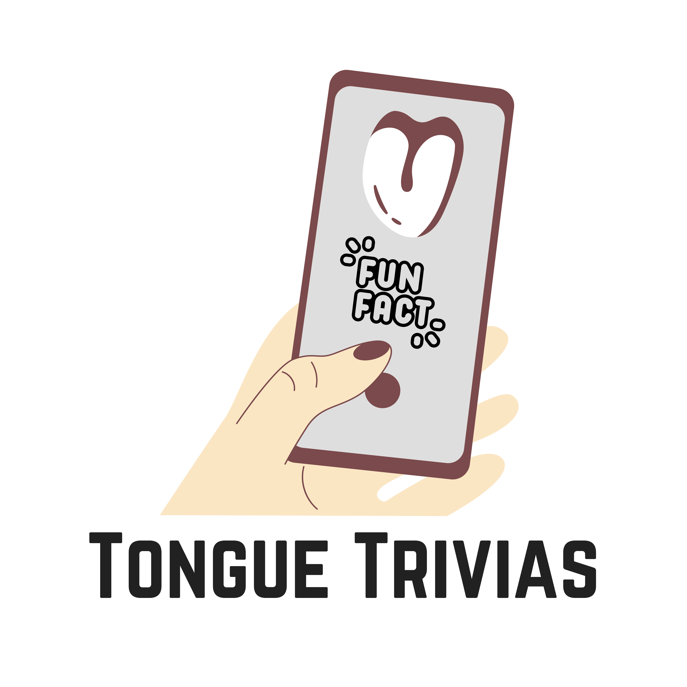

Read these to learn more about the project:
A tooth-marked tongue refers to a tongue surface that bears impressions or markings similar to the edges of teeth. These marks are visible on the sides of the tongue.
Implications:
Digestive Issues - Tooth marks may suggest potential digestive concerns, indicating that the body might be struggling to absorb nutrients from food.
Spleen and Stomach Health - In Traditional Chinese Medicine (TCM), tooth-marks are often associated with the Spleen and Stomach health, which play crucial roles in digestion.
Possible Causes:
Poor Digestive Function - Inefficient digestion can lead to the formation of tooth marks on the tongue.
Nutrient Absorption Issues - Difficulty in absorbing nutrients from food can contribute to this condition.
Actions to Take:
Dietary Changes - Consider incorporating easily digestible foods and Avoid excessive intake of heavy or greasy meals.
Hydration - Ensure adequate water intake to support digestion.
Consult a Healthcare Professional - If tooth marks persist or are accompanied by other symptoms, consult with a healthcare professional. Seek guidance from a TCM practitioner for a holistic approach. Remember, the appearance of tooth marks on the tongue can be indicative of various factors, and it\'s essential to address the underlying causes for comprehensive well-being. Always consult with a healthcare professional for personalized advice and diagnosis.
', 'In Traditional Chinese Medicine (TCM), the Five Phases have specific roles and connections.
1. Heart Phase:
- It\'s linked to the Liver.
- It controls blood vessels and influences the tongue.
- Its well-being shows on the face.
2. Spleen Phase:
- It comes from the Heart.
- It manages muscles and has an effect on the mouth.
- Its prosperity is reflected in the lips.
3. Lung Phase:
- It originates from the Spleen.
- It oversees skin, hair, and is connected to the nose.
- Its prosperity shows in body hair.
4. Kidney Phase:
- It\'s generated in the Lungs.
- It governs bones, influences ears, and affects hair appearance.
5. Liver Phase:
- It comes from the Kidneys.
- It manages tendons, enlightens the eyes, and affects fingers, toes, and nails.
Moreover:
- Heart connects with the small intestine.
- Spleen connects with the stomach.
- Lung connects with the large intestine.
- Kidney connects with the bladder.
- Liver connects with the gallbladder.
The arrows on the outer circle show a mother-son relationship, and the arrows diagonally indicate a master-servant relationship.')" /> Tongue: The Rebel Muscle - Your tongue is the lone rebel in the skin-covered body crew! It\'s the only part that proudly goes skin-free.
Tongue\'s Color Palette - A healthy tongue comes in various shades of pink. If it\'s too red, pale, or white, it might be signaling something\'s up with your health.
Ancient Clues - Traditional Chinese Medicine (TCM) has been studying tongues for centuries. Tooth marks are seen as clues to understand digestive health, providing ancient insights into overall well-being.
Tongue Chronicles: Unveiling Internal Blockbusters! - Surprisingly, this muscle isn\'t selfish! It acts as a mirror, reflecting the drama unfolding in other muscles and internal organs. It\'s like a backstage pass to the body\'s blockbuster show!
Nature\'s Braille - Your tongue\'s tooth marks are like nature\'s Braille – a unique code that could reveal a story about your body\'s digestive adventures.
Tongue Workout - The tongue is a powerhouse! It\'s made up of eight interwoven muscles. Speaking, eating, and even beatboxing are all thanks to your tongue\'s workout routine.', )" />